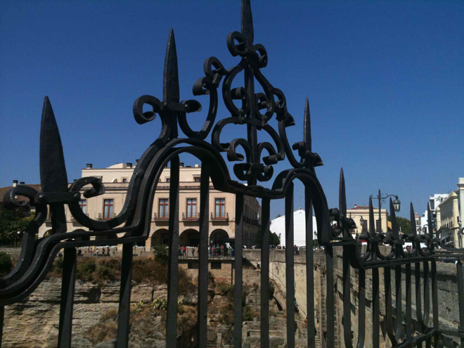
The previous time I had been to Ronda was back in February 1985 (28 years earlier!) when the bus ride up from Marbella was alarming, veering over precipitous drops over the cliff-side road. Metal barriers had since been installed along the side of the road, so it now felt a little bit safer.
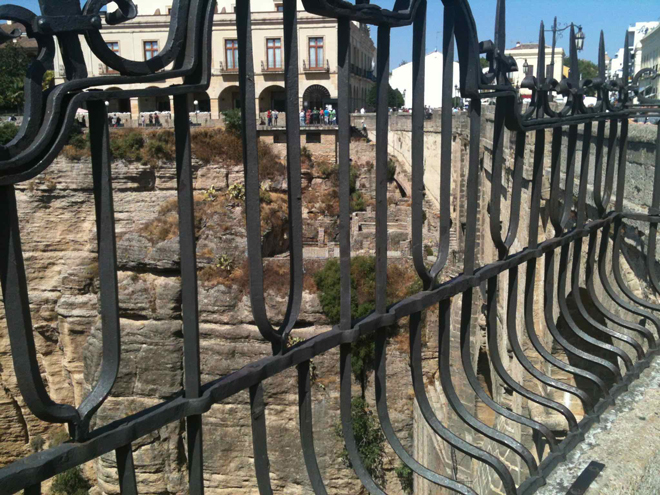
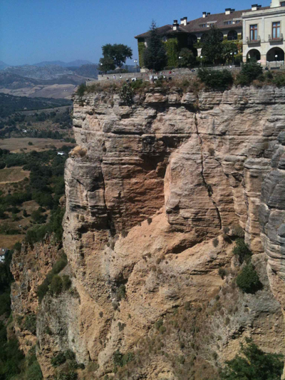
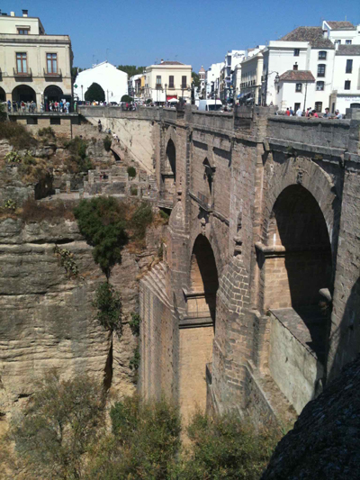
Ronda itself didn't seem to have changed much. The Puente Nuevo (New Bridge) still spans the canyon although the term 'nuevo' is something of a misnomer, as the building of this bridge commenced in 1751 and took until 1793 to complete. It towers 120 metres (390 feet) above the canyon floor. The former town hall, which stands next to the Puente Nuevo, is now the site of a parador and has a view of the Tajo canyon.
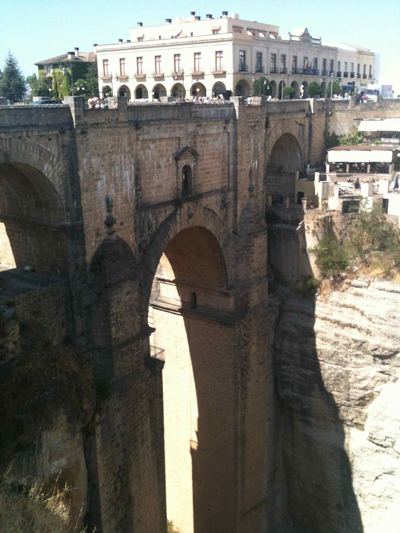
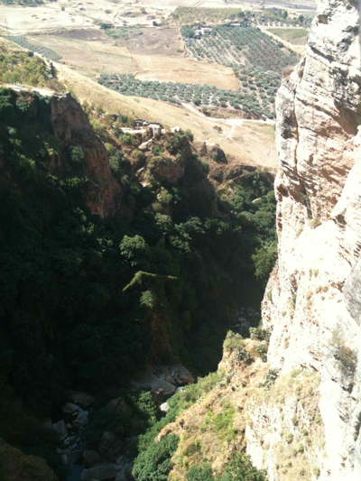
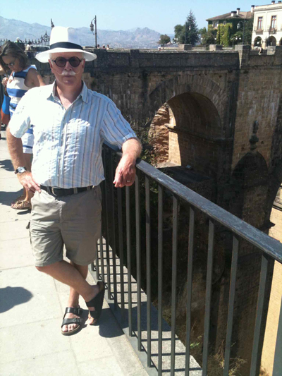
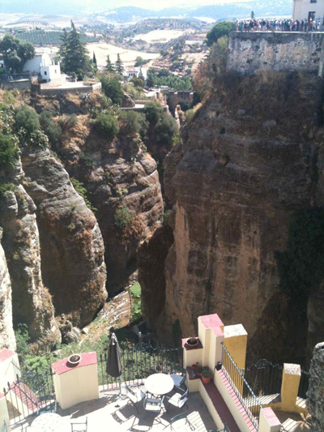
We had lunch at an ideally-situated restuarant with fabulous views but with, sadly, a nearby wasps' nest so we had to retreat inside the building to avoid being stung during our lunch.
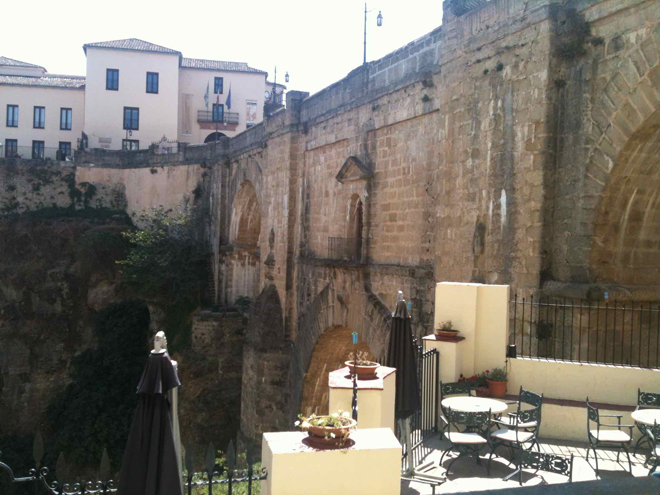
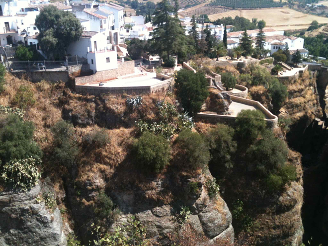
Shops sold all sorts of items - flamenco dresses (all toning - naturally) and delicatessens with huge ranges of jamon, cheese, wine and bottled goods.
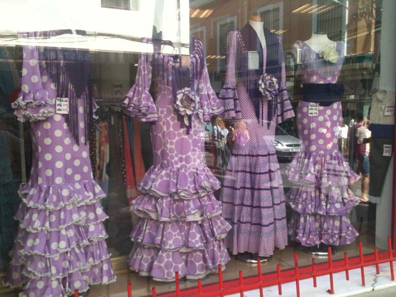
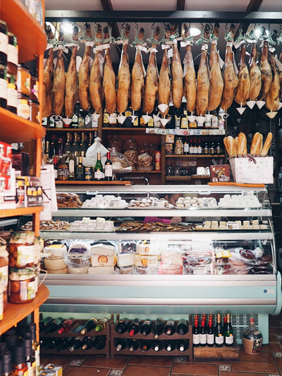
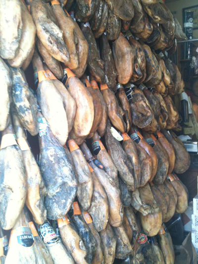
We were perplexed by this sign as a collection of 'sludge' did not sound particularly enticing.
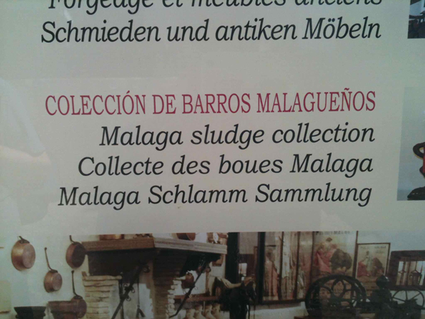
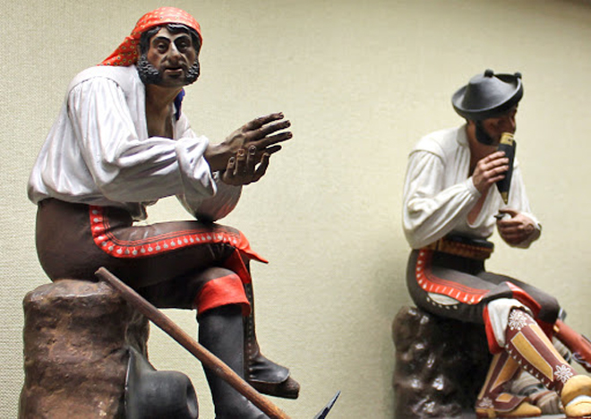
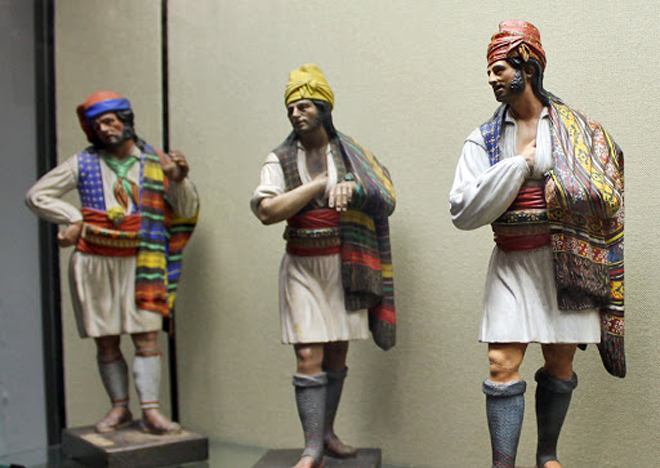
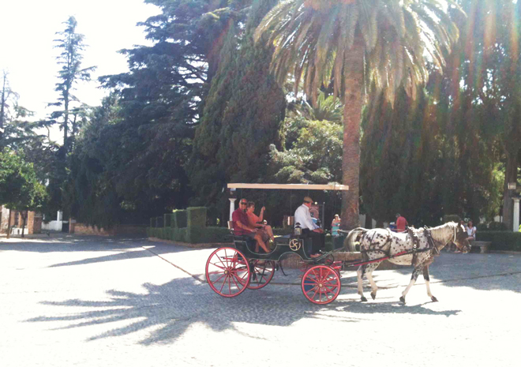
Ronda has many cultural associations: Ernest Hemingway's novel For Whom the Bell Tolls describes the execution of Nationalist sympathizers early in the Spanish Civil War. The Republicans murder the Nationalists by throwing them from cliffs in an Andalusian village, and Hemingway allegedly based the account on killings that took place in Ronda at the cliffs of El Tajo.
Orson Welles was said to be inspired by his frequent trips to Spain and Ronda (including his unfinished film Don Quixote). After he died in 1985, his ashes were buried in a well on the rural property of his friend, retired bullfighter Antonio Ordoñez.
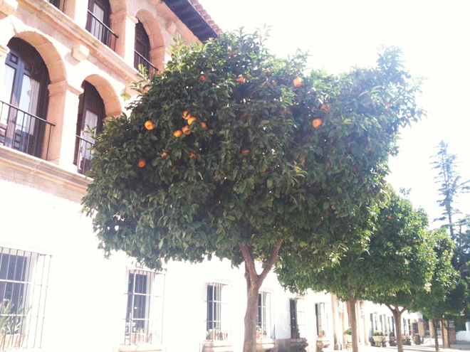
In a charming orange-tree lined square we found the Iglesia de Santa Maria la Mayor. The city’s original mosque metamorphosed into this elegant church. Just inside the entrance is an arch covered with Arabic inscriptions that was part of the mosque’s mihrab (prayer niche indicating the direction of Mecca). The interior is a riot of decorative styles and ornamentation and a huge central cedar choir stall divides the church into two sections: aristocrats to the front, everyone else at the back.
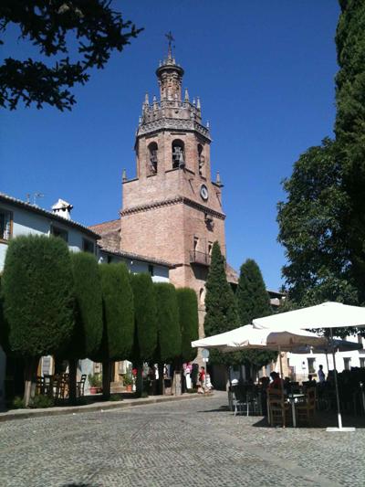
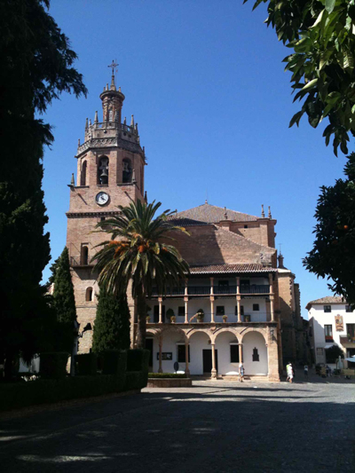
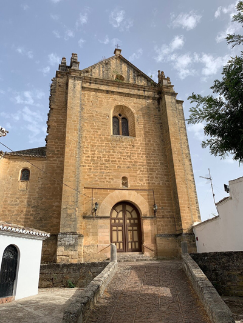
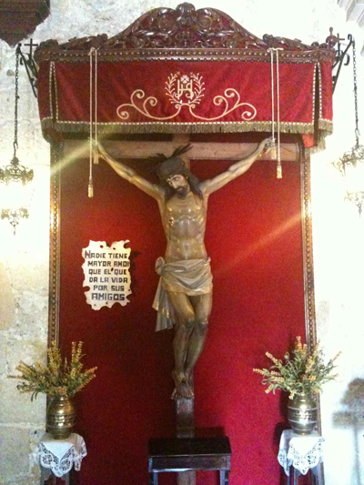
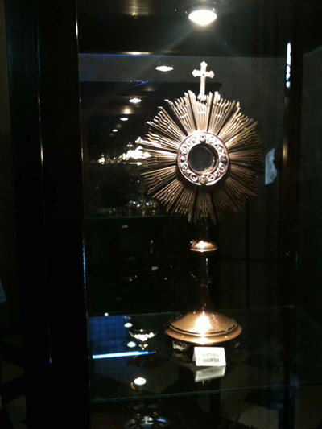
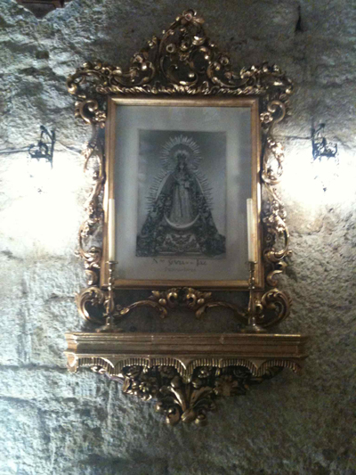
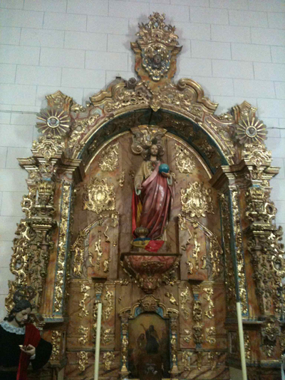
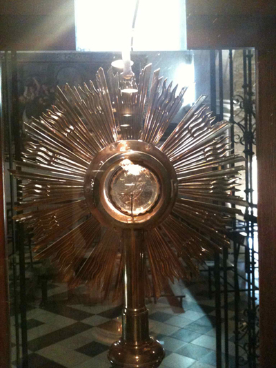
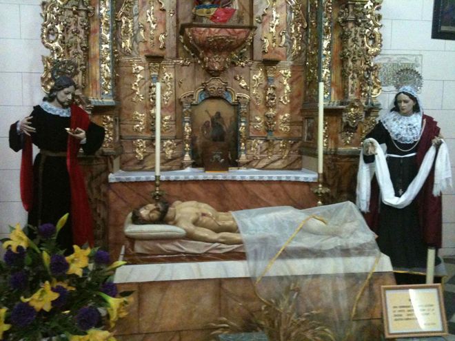
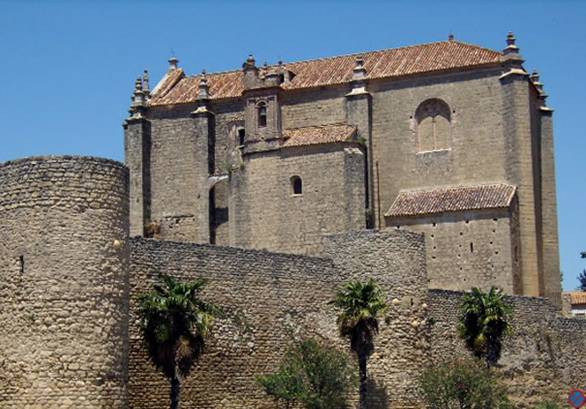
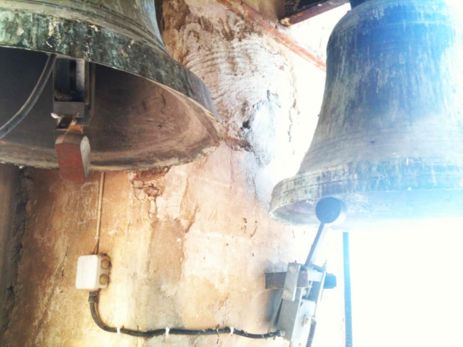
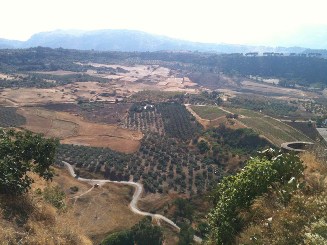